| SOURCE | TITLE| IMAGE MATCH | click to source page |
| www.shutterstock.com | Turkey Circa 1956 Stamp Printed Turkey Stock Photo 121293970 ... |  |
| www.stampedia.net | TURKEY 1957 40 kurus Definitive Stamps, 1956series | Kemal ... | 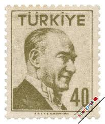 |
| www.ebay.com | Turkey 1956 Sc# 1226-1227 Lot of 2 Mint Stamps MNH & MNG ... | 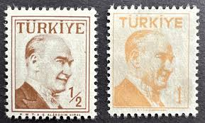 |
| www.hipstamp.com | Turkey 1957 Early Issue Fine Used 75K. 091597 | Europe ... | 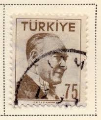 |
| www.ebay.com | Turkey Stamp, Scott 1242 MLH | eBay | 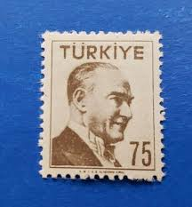 |
| www.stampedia.net | TURKEY 1957 25 kurus Definitive Stamps, 1956series | Kemal ... | 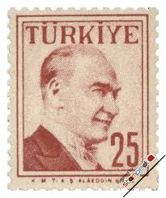 |
| www.dreamstime.com | 3,607 Postcard Stamp Turkey Stock Photos - Free & Royalty ... | 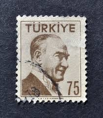 |
| www.hipstamp.com | Turkey #1283 Kemal Ataturk; Used | Europe - Turkey, General ... | 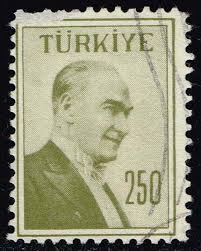 |
| www.alamy.com | Stamp turkey hi-res stock photography and images - Page 8 ... | 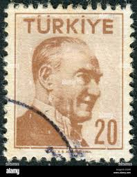 |
| www.lastdodo.com | Atatürk 2 (1958) - Türkiye - LastDodo | 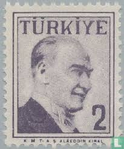 |
| www.kitantik.com | Türk Pulu - Turkish Stamp - Mektup Zarfından Kesilmiş ... | 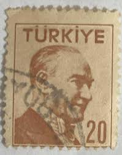 |
| www.shutterstock.com | turkish_postage_stamp": Over 4,502 Royalty-Free Licensable ... |  |
| www.alamy.com | Postage stamp from Turkey in the Definitive Postage Stamps ... |  |
| www.kitantik.com | Mektup Zarfından Kesilmiş / Postadan Geçmiş Pul Filateli ... | 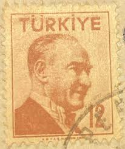 |
| www.dreamstime.com | Postage Stamp Turkey 1965. Ataturk Portrait Editorial Image ... | 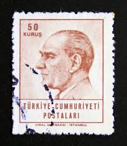 |
| www.ebay.com | Turkey - 1955 - Ataturk - 40K - #01 | eBay | 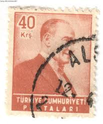 |
| www.istockphoto.com | 50+ Atatürk Postage Stamp Stock Photos, Pictures & Royalty ... | 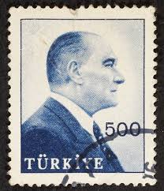 |
| www.buyhungarianstamps.com | 811-816 Turkey - Stamps of 1931-38 Overprinted in Black (MNH ... |  |
| www.stampedia.net | stampedia TURKEY STAMP catalog | 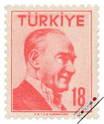 |
| www.leboncoin.fr | TURQUIE timbre N°1306 oblitéré - Collection | 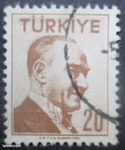 |
| tw.123rf.com | TURKEY - CIRCA 1957: Stamp Printed By Turkey, Shows ... | 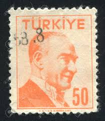 |
| koleksiyonmarket.com | 1956 Atatürk (Tek Çizgi Çerçeveli Portre) Pulları | 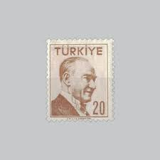 |
| www.mercari.com | 68826] Turkey 1964-1965 Definitives Atatürk | Mercari |  |
| worldstampsproject.org | Philately of Turkey – Varieties of Postage Stamps – World ... | 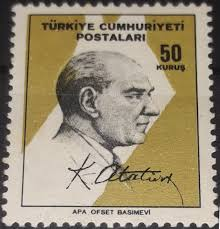 |
| www.hipstamp.com | Search "Turkey 1957" / HipStamp | 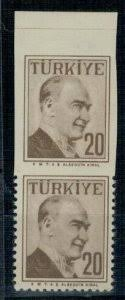 |
| www.stampsandstuff.net | Stamps from Turkey |  |
| www.shutterstock.com | Turkey-circa1955a Stamp Printed Turkey Shows Image Stock ... | 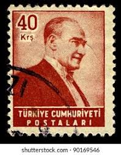 |
| www.instagram.com | DAMGASIZ GOMSUZ BLOK PUL ALDIM : 12 TL | 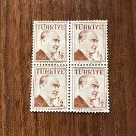 |
| www.alamy.com | Mustafa Kemal Ataturk (1881-1938), first President of Turkey ... | 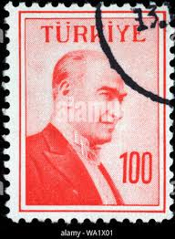 |
| en.todocoleccion.net | turquia - valor facial 50 kurus - koy calismala - Buy ... | 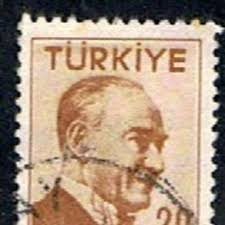 |
| www.pinterest.com | TURKEY - CIRCA 1965: A stamp printed in Turkey shows Kemal ... | 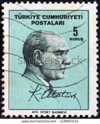 |
| www.nadirkitap.com | Mektup Zarfından Kesilmiş / Postadan Geçmiş Pul Filateli ... | 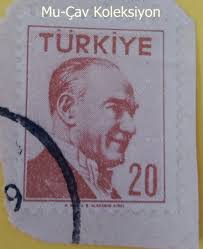 |
| www.dreamstime.com | Postage Stamp Printed in Turkey Shows Kemal Ataturk 1881 ... |  |
| www.kitantik.com | Mektup Zarfından Kesilmiş / Postadan Geçmiş Pul Filateli ... | 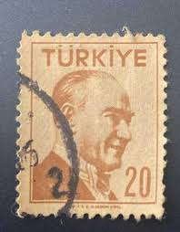 |
| www.buyhungarianstamps.com | 744 Turkey - Mustafa Kemal Pasha (Kemal Ataturk) – Eastern ... |  |
| www.efocc.org | EFOCC |  |
| www.ebay.com | Lot of 3 Turkish Postal Stamps 1931/55 Kemal Ataturk ... | 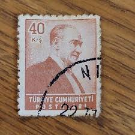 |
| pngtree.com | Kemal Ataturk Aged Male Retro Photo Background And Picture ... | 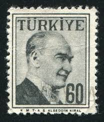 |
| torob.com | خرید و قیمت تمبر ترکیه از سری 1957 آتاتورک ، اصل ( کد 470 ... | 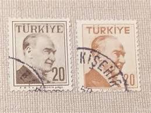 |
| www.facebook.com | 1970 Turkish lira note featuring Ataturk | 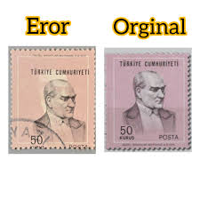 |
| en.todocoleccion.net | turquía 1972. básico: kemal ataturk 200 kurus t - Buy ... | 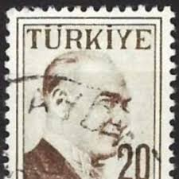 |
| www.hipstamp.com | Turkey - #1264 Kemal Ataturk - Used | Europe - Turkey ... |  |
| museumofmaterialmemory.com | Baba's Philatelic World - Museum of Material Memory | 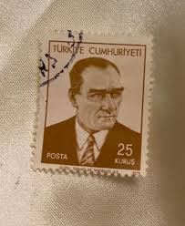 |
| www.collectorbazar.com | Turkiye Used President - P15779 | 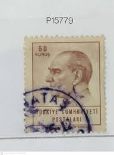 |
| colnect.com | Stamp: Kemal Ataturk (1881-1938) (Türkiye (Turkey)(Kemal ... |  |
| www.pinterest.com | Turkey (37) 1956 Ataturk | 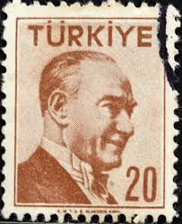 |
| www.alamy.com | TURKEY - CIRCA 1996: a stamp printed in the Turkey shows ... | 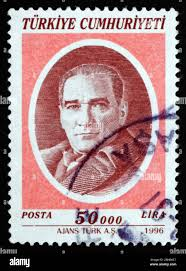 |
| stampencyclopedia.miraheze.org | Hatay - Stamp Encyclopedia | 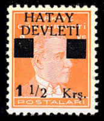 |
| www.shutterstock.com | 9 Basimevi Royalty-Free Images, Stock Photos & Pictures ... | 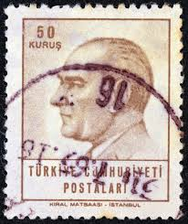 |
| www.dreamstime.com | Postage Stamp Printed in Turkey Shows Kemal Ataturk (1881 ... | 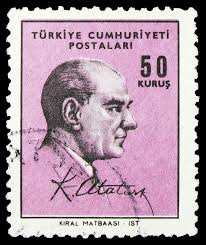 |
| www.kitantik.com | Mektup Zarfından Kesilmiş / Postadan Geçmiş Pul Filateli ... | 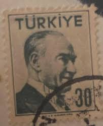 |
| www.nadirkitap.com | Mektup Zarfından Kesilmiş / Postadan Geçmiş 2 Adet Pul ... | 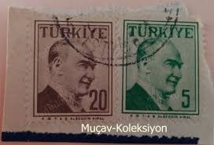 |
| esam.ir | تمبر ترکیه 1971 تک و ارزشمند ، اصل( کد 1208 ) | 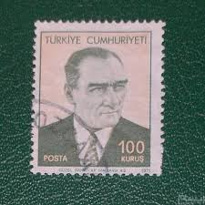 |
| www.leboncoin.fr | Turquie - lot 33 timbres Atatürk - Collection | 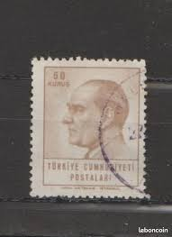 |
| in.pinterest.com | TURKEY - CIRCA 1961: a Stamp Printed in Turkey Shows a ... |  |
| ajuntament.barcelona.cat | Atatürk's Turkey - Col·leccio Marull |  |
| pngtree.com | Turkey Faces PNG Transparent Images Free Download | Vector ... | 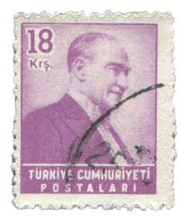 |
| www.istockphoto.com | 1923 Argentina Postage Stamp With Jose De San Martin Stock ... | 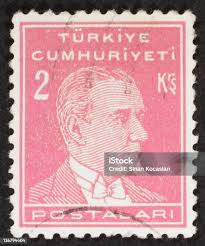 |
| koleksiyonmarket.com | 1955 Atatürk (Sola Bakan Portre) Pulları | 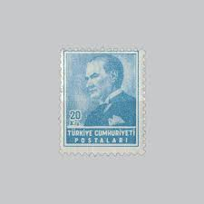 |